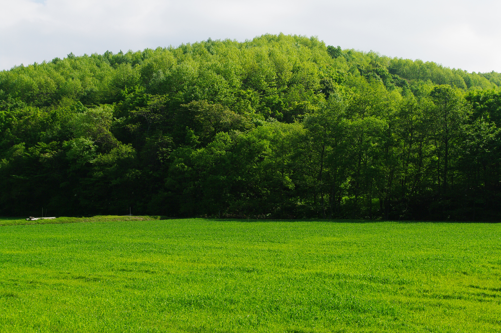

観光情報
双月市の魅力的な観光スポットやイベント情報をご紹介します
双月市観光マップ
人気観光スポット

自然
双月湖
市のシンボルでもある美しい湖。四季折々の景色が楽しめ、特に夕日の美しさで有名です。
市中心部から車で15分
見学自由
歴史
双月城跡
江戸時代に建てられた城の跡地。現在は公園として整備され、桜の名所としても親しまれています。
双月駅から徒歩10分
9:00-17:00
文化
双月市美術館
地域の文化芸術の拠点。常設展では地元作家の作品を中心に展示しています。
市役所から徒歩5分
10:00-18:00
体験
双月温泉
天然温泉が楽しめる日帰り温泉施設。地元の食材を使った料理も味わえます。
双月駅からバス20分
11:00-21:00
アクセス情報
電車でお越しの場合
- JR双月線「双月駅」下車
- 主要都市から約1時間30分
- 駅から市内各所へバス・タクシー利用
お車でお越しの場合
- 双月IC下車、市街地まで約10分
- 市役所周辺に無料駐車場あり
- 観光スポットには専用駐車場完備
バスでお越しの場合
- 市内循環バス「双月号」運行中
- 1日乗車券 500円でお得に移動
- 主要観光地を効率よく巡回
観光案内所
双月市観光案内所
所在地：双月市中央1-1-1（双月駅構内）
営業時間：9:00-18:00（年末年始を除く）
電話：012-345-6800
サービス：観光マップ配布、宿泊施設案内、イベント情報提供
ご利用できるサービス
- 観光パンフレット・マップの配布
- 宿泊施設の紹介・予約サポート
- 観光ルートのご提案
- レンタサイクルの貸出
- 荷物の一時預かりサービス